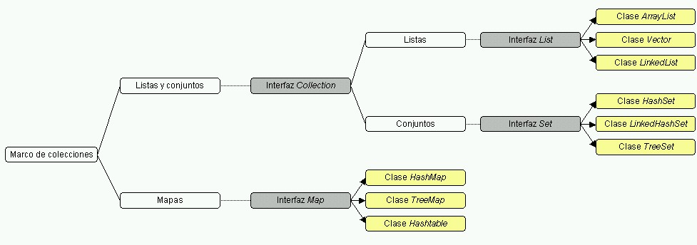

Esta sesión la vamos a dedicar a estudiar las diferentes formas que tenemos en Java de almacenar conjuntos de objetos, para luego recorrerlos, modificar los elementos del conjunto, reordenarlos, etc. En definitiva, vamos a hablar de los distintos tipos de colecciones.
Todo el marco de colecciones está formado por clases e interfaces que se encuentran dentro del paquete java.util. Distinguimos las siguientes subcategorías:

Veremos que hay dos tipos de colecciones principales:
Las distintas interfaces de las que parten los tipos concretos proporcionan métodos para acceder a la colección de elementos, o al mapa, y que podremos utilizar para cualquier tipo de datos que implemente la correspondiente interfaz. Esto provoca un polimorfismo en la estructura, puesto que se proporciona una serie de métodos que pueden ser utilizados para acceder a distintos tipos de datos. Por ejemplo, un operador add utilizado para añadir un elemento, podrá ser empleado tanto si estamos trabajando con una lista enlazada, con un array, o con un conjunto.
Podemos encontrar los siguientes elementos dentro del marco de colecciones de Java:
Antes de ver los distintos tipos de elementos que ofrece el marco de colecciones, comenzaremos viendo dos elementos utilizados comunmente en Java para acceder a colecciones de datos. El primero de ellos es la enumeración, definida mediante la interfaz Enumeration, nos permite consultar los elementos que contiene una colección de datos. Muchos métodos de clases Java que deben devolver múltiples valores, lo que hacen es devolvernos una enumeración que podremos consultar mediante los métodos que ofrece dicha interfaz.
La enumeración irá recorriendo secuencialmente los elementos de la colección. Para leer cada elemento de la enumeración deberemos llamar al método:
Object item = enum.nextElement();
Que nos proporcionará en cada momento el siguiente elemento de la enumeración a leer. Además necesitaremos saber si quedan elementos por leer, para ello tenemos el método:
enum.hasMoreElements()
Normalmente, el bucle para la lectura de una enumeración será el siguiente:
while (enum.hasMoreElements())
{
Object item = enum.nextElement();
// Hacer algo con el item leido }
Vemos como en este bucle se van leyendo y procesando elementos de la enumeración uno a uno mientras queden elementos por leer en ella. Notar también que el método nextElement devuelve un objeto Object genérico, que nosotros deberemos convertir (mediante cast) al tipo de datos que estemos manejando:
TuClase item = (TuClase)(enum.nextElement());
Otro elemento para acceder a los datos de una colección son los iteradores. La diferencia está en que los iteradores además de leer los datos nos permitirán eliminarlos de la colección. Los iteradores se definen mediante la interfaz Iterator, que proporciona de forma análoga a la enumeración el método:
Object item = iter.next();
Que nos devuelve el siguiente elemento a leer por el iterador. Al igual que en el caso de la enumeración, deberemos convertir lo que devuelve al tipo de datos que nos interese. Para saber si quedan más elementos que leer tenemos el método:
iter.hasNext()
Además, podemos borrar el último elemento que hayamos leido. Para ello tendremos el método:
iter.remove();
Por ejemplo, podemos recorrer todos los elementos de una colección utilizando un iterador y eliminar aquellos que cumplan ciertas condiciones:
while (iter.hasNext())
{
Object item = iter.next();
if(condicion_borrado(item))
iter.remove();
}
Las enumeraciones y los iteradores no son tipos de datos, sino estructuras que nos servirán para acceder a los elementos dentro de los tipos de datos que veremos a continuación.
Las colecciones representan grupos de objetos, denominados elementos. Podemos encontrar diversos tipos de colecciones, según si sus elementos están ordenados, o si permitimos repetición de elementos o no.
El tipo más genérico en cuanto a que se refiere a cualquier tipo que contenga un grupo de elementos viene definido por la interfaz Collection, de la cual heredará cada subtipo específico. En esta interfaz encontramos una serie de métodos que nos servirán para acceder a los elementos de cualquier colección de datos, sea del tipo que sea. Estos métodos generales son:
boolean add(Object o)
Añade un elemento (objeto) a la colección. Nos devuelve true si tras añadir el elemento la colección ha cambiado, es decir, el elemento se ha añadido correctamente, o false en caso contrario.
void clear()
Elimina todos los elementos de la colección.
boolean contains(Object o)
Indica si la colección contiene el elemento (objeto) indicado.
boolean isEmpty()
Indica si la colección está vacía (no tiene ningún elemento).
Iterator iterator()
Proporciona un iterador para acceder a los elementos de la colección.
boolean remove(Object o)
Elimina un determinado elemento (objeto) de la colección, devolviendo true si dicho elemento estaba contenido en la colección, y false en caso contrario.
int size()
Nos devuelve el número de elementos que contiene la colección.
Object [ ] toArray()
Nos devuelve la colección de elementos como un array de objetos. Si sabemos de antemano que los objetos de la colección son todos de un determinado tipo (como por ejemplo de tipo String) podremos obtenerlos en un array del tipo adecuado, en lugar de usar un array de objetos genéricos. En este caso NO podremos hacer una conversión cast descendente de array de objetos a array de un tipo más concreto, ya que el array se habrá instanciado simplemente como array de objetos:
String [ ] cadenas = (String [ ]) coleccion.toArray(); // Esto no se puede hacer!!!
Lo que si podemos hacer es instanciar nosotros un array del tipo adecuado y hacer una conversión cast ascendente (de tipo concreto a array de objetos), y utilizar el siguiente método:
String [ ] cadenas = new String[coleccion.size()]; coleccion.toArray(cadenas); // Esto si que funcionará
Esta interfaz es muy genérica, y por lo tanto no hay ningún tipo de datos que la implemente directamente, sino que implementarán subtipos de ellas. A continuación veremos los subtipos más comunes.
Este tipo de colección se refiere a listas en las que los elementos de la colección tienen un orden, existe una secuencia de elementos. En ellas cada elemento estará en una determinada posición (índice) de la lista.
Las listas vienen definidas en la interfaz List, que además de los métodos generales de las colecciones, nos ofrece los siguientes para trabajar con los índices:
void add(int indice, Object obj)
Inserta un elemento (objeto) en la posición de la lista dada por el índice indicado.
Object get(int indice)
Obtiene el elemento (objeto) de la posición de la lista dada por el índice indicado.
int indexOf(Object obj)
Nos dice cual es el índice de dicho elemento (objeto) dentro de la lista. Nos devuelve -1 si el objeto no se encuentra en la lista.
Object remove(int indice)
Elimina el elemento que se encuentre en la posición de la lista indicada mediante dicho índice, devolviéndonos el objeto eliminado.
Object set(int indice, Object obj)
Establece el elemento de la lista en la posición dada por el índice al objeto indicado, sobrescribiendo el objeto que hubiera anteriormente en dicha posición. Nos devolverá el elemento que había previamente en dicha posición.
int size()
Obtiene el número de elementos que hay en la lista.
Podemos encontrar diferentes implementaciones de listas de elementos en Java:
Implementa una lista de elementos mediante un array de tamaño variable. Conforme se añaden elementos el tamaño del array irá creciendo si es necesario. El array tendrá una capacidad inicial, y en el momento en el que se rebase dicha capacidad, se aumentará el tamaño del array.
Las operaciones de añadir un elemento al final del array (add), y de establecer u obtener el elemento en una determinada posición (get/set) tienen un coste temporal constante. Las inserciones y borrados tienen un coste lineal O(n), donde n es el número de elementos del array.
Hemos de destacar que la implementación de ArrayList no está sincronizada, es decir, si múltiples hilos acceden a un mismo ArrayList concurrentemente podriamos tener problemas en la consistencia de los datos. Por lo tanto, deberemos tener en cuenta cuando usemos este tipo de datos que debemos controlar la concurrencia de acceso. También podemos hacer que sea sincronizado como veremos más adelante.
El Vector es una implementación similar al ArrayList, con la diferencia de que el Vector si que está sincronizado. Este es un caso especial, ya que la implementación básica del resto de tipos de datos no está sincronizada.
Esta clase existe desde las primeras versiones de Java, en las que no existía el marco de las colecciones descrito anteriormente. En las últimas versiones el Vector se ha acomodado a este marco implementando la interfaz List.
Sin embargo, si trabajamos con versiones previas de JDK, hemos de tener en cuenta que dicha interfaz no existía, y por lo tanto esta versión previa del vector no contará con los métodos definidos en ella. Además de los nuevos métodos que incorporó de List, los métodos propios del vector para acceder a su contenido, que han existido desde las primeras versiones, son los siguientes:
void addElement(Object obj)
Añade un elemento al final del vector.
Object elementAt(int indice)
Devuelve el elemento de la posición del vector indicada por el índice.
void insertElementAt(Object obj, int indice)
Inserta un elemento en la posición indicada.
boolean removeElement(Object obj)
Elimina el elemento indicado del vector, devolviendo true si dicho elemento estaba contenido en el vector, y false en caso contrario.
void removeElementAt(int indice)
Elimina el elemento de la posición indicada en el índice.
void setElementAt(Object obj, int indice)
Sobrescribe el elemento de la posición indicada con el objeto especificado.
int size()
Devuelve el número de elementos del vector. Este método lo incorpora también la interfaz List, pero ya existía previamente en Vector.
Por lo tanto, si programamos para versiones antiguas de la máquina virtual Java, será recomendable utilizar estos métodos para asegurarnos de que nuestro programa funcione. Esto será importante en la programación de Applets, ya que la máquina virtual incluida en muchos navegadores corresponde a versiones antiguas.
Sobre el vector se construye el tipo pila (Stack), que apoyándose en el tipo vector ofrece métodos para trabajar con dicho vector como si se tratase de una pila, apilando y desapilando elementos (operaciones push y pop respectivamente). La clase Stack hereda de Vector, por lo que en realidad será un vector que ofrece métodos adicionales para trabajar con él como si fuese una pila.
La clase sesion07.Ej1 de la plantilla tiene un método main, donde hemos creado un objeto de tipo Vector, y le hemos añadido 10 cadenas: Hola0, Hola1, Hola2...Hola9. Con este vector deberás hacer lo siguiente:
Enumeration elements();que devuelve un Enumeration para poder recorrer los elementos del vector. Se trata de que obtengas esa enumeración, y formes un bucle como se ha explicado en los apuntes, para recorrerla de principio a fin. Para cada elemento, saca su valor por pantalla (imprime la cadena).
Iterator iterator();que devuelve un Iterator para poder recorrer los elementos del vector. Haz ahora otro bucle como el que se explica en los apuntes, para recorrer los elementos del vector, esta vez con el Iterator. Para cada elemento, vuelve a imprimir su valor por pantalla.
Una vez tengas los tres bucles hechos, ejecuta el programa, y observa lo que saca cada uno de los bucles por pantalla. ¿Encuentras alguna diferencia en el comportamiento de cada uno? ¿Qué forma de recorrer el vector te resulta más cómoda de programar y por qué?
NOTA: algunas de las técnicas que has utilizado para recorrer el vector se pueden utilizar de la misma forma para recorrer otros tipos de listas. Por ejemplo, puedes obtener el Iterator de un ArrayList y recorrerlo, o ir elemento por elemento...
En este caso se implementa la lista mediante una lista doblemente enlazada. Por lo tanto, el coste temporal de las operaciones será el de este tipo de listas. Cuando realicemos inserciones, borrados o lecturas en los extremos inicial o final de la lista el tiempo será constante, mientras que para cualquier operación en la que necesitemos localizar un determinado índice dentro de la lista deberemos recorrer la lista de inicio a fin, por lo que el coste será lineal con el tamaño de la lista O(n), siendo n el tamaño de la lista.
Para aprovechar las ventajas que tenemos en el coste temporal al trabajar con los extremos de la lista, se proporcionan métodos propios para acceder a ellos en tiempo constante:
void addFirst(Object obj) / void addLast(Object obj)
Añade el objeto indicado al principio / final de la lista respectivamente.
Object getFirst() / Object getLast()
Obtiene el primer / último objeto de la lista respectivamente.
Object removeFirst() / Object removeLast()
Extrae el primer / último elemento de la lista respectivamente, devolviéndonos dicho objeto y eliminándolo de la lista.
Hemos de destacar que estos métodos nos permitirán trabajar con la lista como si se tratase de una pila o de una cola. En el caso de la pila realizaremos la inserción y la extracción de elementos por el mismo extremo, mientras que para la cola insertaremos por un extremo y extraeremos por el otro.
La clase sesion07.Ej2 contiene un método main que a su vez llama a dos métodos de la propia clase:
El método main prueba el primer método con N = 10.000 operaciones, y el segundo con N = 1.000.000 operaciones. Se pide:
Los conjuntos son grupos de elementos en los que no encontramos ningún elemento repetido. Consideramos que un elemento está repetido si tenemos dos objetos o1 y o2 iguales, comparandolos mediante el operador o1.equals(o2). De esta forma, si el objeto a insertar en el conjunto estuviese repetido, no nos dejará insertarlo. Recordemos que el método add devolvía un valor booleano, que servirá para este caso, devolviendonos true si el elemento a añadir no estaba en el conjunto y ha sido añadido, o false si el elemento ya se encontraba dentro del conjunto. Un conjunto podrá contener a lo sumo un elemento null.
Los conjuntos se definen en la interfaz Set, a partir de la cual se construyen diferentes implementaciones. Todas tienen métodos genéricos basados en la interfaz padre:
boolean add(Object o)
Añade el objeto al conjunto y devuelve si lo ha podido añadir (true) o no (false), porque ya existía, o por otra razón.
boolean addAll(Collection c)
Añade todos los elementos de la colección que se le pasa como parámetro al conjunto. Devuelve si los ha podido añadir (true) o no (false). Notar que así podemos pasar cualquier tipo de colección (Vector, ArrayList, incluso otros tipos de conjuntos) a otros conjuntos.
void clear()
Borra todos los elementos del conjunto.
boolean contains(Object o)
Devuelve true si el objeto o está en el conjunto, y false si no.
boolean remove(Object o)
Elimina el objeto del conjunto y devuelve si lo ha podido borrar (true) o no (false).
Existen otros métodos que también se tenían en Collection, como size, iterator, etc. Consultad el API para una visión más detallada. A continuación explicamos por encima algunos subtipos de conjuntos.
Los objetos se almacenan en una tabla de dispersión (hash). El coste de las operaciones básicas (inserción, borrado, búsqueda) se realizan en tiempo constante siempre que los elementos se hayan dispersado de forma adecuada. La iteración a través de sus elementos es más costosa, ya que necesitará recorrer todas las entradas de la tabla de dispersión, lo que hará que el coste esté en función tanto del número de elementos insertados en el conjunto como del número de entradas de la tabla. El orden de iteración puede diferir del orden en el que se insertaron los elementos.
Es similar a la anterior pero la tabla de dispersión es doblemente enlazada. Los elementos que se inserten tendrán enlaces entre ellos. Por lo tanto, las operaciones básicas seguirán teniendo coste constante, con la carga adicional que supone tener que gestionar los enlaces. Sin embargo habrá una mejora en la iteración, ya que al establecerse enlaces entre los elementos no tendremos que recorrer todas las entradas de la tabla, el coste sólo estará en función del número de elementos insertados. En este caso, al haber enlaces entre los elementos, estos enlaces definirán el orden en el que se insertaron en el conjunto, por lo que el orden de iteración será el mismo orden en el que se insertaron.
Utiliza un árbol para el almacenamiento de los elementos. Por lo tanto, el coste para realizar las operaciones básicas será logarítmico con el número de elementos que tenga el conjunto O(log n).
Aunque tienen su utilidad, normalmente los tipos de conjuntos no se suelen emplear demasiado a la hora de programar. Su programación es muy similar a la que pueda tener un ArrayList o un Vector, y siempre se tiende a utilizar estos, porque sus clases son más conocidas. Sin embargo, los conjuntos tienen su verdadera utilidad cuando queremos tener listas de elementos no repetidos. Muchos programadores tienden a hacer ellos "a mano" la comprobación de si está o no repetido, y con estas clases se facilitaría bastante la tarea.
La clase sesion07.Ej3 recibe una cadena (sin espacios) como parámetro, y la añade dentro de sus campos Vector y HashSet. Dichos campos ya tienen insertadas las cadenas "a1", "a2" y "a3".
Aunque muchas veces se hable de los mapas como una colección, en realidad no lo son, ya que no implementan la interfaz Collection, tal y como puede verse en el esquema planteado al inicio de esta sesión.
Los mapas se definen en la interfaz Map. Un mapa es un objeto que relaciona una clave (key) con un valor. Contendrá un conjunto de claves, y a cada clave se le asociará un determinado valor. En versiones anteriores este mapeado entre claves y valores lo hacía la clase Dictionary, que ha quedado obsoleta. Tanto la clave como el valor puede ser cualquier objeto.
Los métodos básicos para trabajar con estos elementos son los siguientes:
Object get(Object clave)
Nos devuelve el valor asociado a la clave indicada, o null si no existe dicha clave.
Object put(Object clave, Object valor)
Inserta una nueva clave con el valor especificado. Nos devuelve el valor que tenía antes dicha clave, o null si la clave no estaba en la tabla todavía.
Object remove(Object clave)
Elimina una clave, devolviendonos el valor que tenía dicha clave, o null si no existía.
Set keySet()
Nos devuelve el conjunto de claves registradas
int size()
Nos devuelve el número de parejas (clave,valor) registradas.
Encontramos distintas implementaciones de los mapas:
Utiliza una tabla de dispersión para almacenar la información del mapa. Las operaciones básicas (get y put) se harán en tiempo constante siempre que se dispersen adecuadamente los elementos. Es coste de la iteración dependerá del número de entradas de la tabla y del número de elementos del mapa. No se garantiza que se respete el orden de las claves.
Utiliza un árbol rojo-negro para implementar el mapa. El coste de las operaciones básicas será logarítmico con el número de elementos del mapa O(log n). En este caso los elementos se encontrarán ordenados por orden ascendente de clave.
Es una implementación similar a HashMap, pero con alguna diferencia. Mientras las anteriores implementaciones no están sincronizadas, esta si que lo está. Además en esta implementación, al contrario que las anteriores, no se permitirán claves nulas (null). Este objeto extiende la obsoleta clase Dictionary, ya que viene de versiones más antiguas de JDK. Ofrece otros métodos además de los anteriores, como por ejemplo el siguiente:
Enumeration keys()
Este método nos devolverá una enumeración de todas las claves registradas en la tabla.
Trabajar con mapas es la forma más eficiente y cómoda de almacenar pares clave=valor. La clase sesion07.Ej4 contiene una subclase llamada Parametro, que utilizamos para guardar ciertos parámetros de configuración, y sus valores. Verás que esta clase tiene un campo nombre donde pondremos el nombre del parámetro, y otro valor con su valor.
La clase principal Ej4 crea muchos parámetros de este tipo, y los almacena en un ArrayList. Finalmente, busca en dicho ArrayList el valor del parámetro cuya clave se le pasa en el main. Saca un mensaje indicando en qué posición lo encontró, y luego imprime todos los Parametros por pantalla, sacando su nombre y su valor.
ArrayList al = new ArrayList();
...
al.add(new Parametro("Clave1", "Valor1"));ahora harás:
Hashtable ht = new Hashtable();
...
ht.put("Clave1", "Valor1");
String valor = (String)(ht.get(nombre));
if (valor == null) ... else ...En este caso no hace falta que indiques en qué posición encontraste al elemento, puesto que, como verás después, las tablas hash no mantienen las posiciones como te esperas.
Enumeration keys();
te devuelve una enumeración de las claves. Luego utilízala para recorrerlas, y con cada una sacar su valor e imprimirlo:
Enumeration en = ht.keys();
while (en.hasMoreElements())
{
String clave = (String)(en.nextElement());
String valor = (String)(ht.get(clave));
... // Imprimir clave y valor por pantalla
}
Como hemos comentado anteriormente, además de las interfaces y las implementaciones de los tipos de datos descritos en los apartados previos, el marco de colecciones nos ofrece una serie de algoritmos útiles cuando trabajamos con estos tipos de datos, especialmente para las listas.
Estos algoritmos los podemos encontrar implementados como métodos estáticos en la clase Collections. En ella encontramos métodos para la ordenación de listas (sort), para la búsqueda binaria de elementos dentro de una lista (binarySearch) y otras operaciones que nos serán de gran utilidad cuando trabajemos con colecciones de elementos.
Supongamos que queremos ordenar una lista List, que ya tengamos previamente creada y llena de elementos del tipo String. Haríamos algo como lo siguiente:
List miLista = new List();
miLista.add("Hola"); miLista.add("Adios"); miLista.add("Hasta luego"); Collections.sort(miLista);
Y obtendríamos el orden siguiente: "Adios", "Hasta luego", "Hola".
Podremos ordenar una lista de cualquier tipo de datos, incluso de objetos definidos por nosotros. Lo único que se necesita para que Java la sepa ordenar automáticamente es que el tipo de datos de la lista tenga métodos que permitan comparar elementos entre sí. ¿Cómo hacer eso? Basta con hacer que el tipo de datos implemente la interfaz Comparable, y que definamos en su clase un método compareTo, que indique, dados dos elementos, cuál es mayor, menor, o igual.
Por ejemplo, supongamos que tenemos objetos de tipo MiClase:
class MiClase
{
String valor;
public MiClase(String v)
{ valor = v;
}
}
Luego hacemos una lista con objetos de este tipo, y queremos que se ordene alfabéticamente, según el campo valor:
List miLista = new List();
miLista.add(new MiClase("AAA")); miLista.add(new MiClase("FFF"); miLista.add(new MiClase("DDD"); Collections.sort(miLista);
Si probamos un código como este, la ordenación no funcionará, porque Java no sabe cómo queremos ordenar los objetos de tipo MiClase. Para solucionarlo, hacemos que MiClase implemente la interfaz Comparable, y definimos un método compareTo (Object o) que:
En nuestra clase, quedaría de la siguiente forma:
class MiClase implements Comparable
{
String valor;
public MiClase(String v)
{ valor = v;
}
public int compareTo(Object o)
{
MiClase mcAux = (MiClase)o;
return this.valor.compareTo(mcAux.valor);
}
}
Notar que la clase String ya implementa la interfaz Comparable, y por tanto podemos comparar cadenas entre sí llamando a su compareTo. Por tanto, podemos aprovechar lo que devuelva esta llamada entre los dos campos valor, para devolver lo mismo en nuestra MiClase. A fin de cuentas, el orden que tendrán estos objetos MiClase será el mismo que internamente tengan los objetos valor.
Una vez hayamos hecho estas modificaciones, el método sort que utilizábamos antes funcionará automáticamente, puesto que ya sabrá qué criterio seguir para comparar y ordener objetos de tipo MiClase.
La clase datos.Persona de la plantilla almacena los datos generales de una persona, como son su nombre, primer apellido, segundo apellido, dirección y teléfono. Tiene un constructor que se encarga de asignar todos esos campos, y métodos get y set para obtener sus valores o cambiarlos, respectivamente.
Además, al final tiene un método main que crea varios objetos de tipo Persona, los coloca en un ArrayList, y luego intenta ordenarlos llamando al método Collections.sort. Sin embargo, de momento el método no funciona (probablemente salte una excepción, porque no sabe cómo comparar los elementos de la lista).
Haz las modificaciones necesarias en la clase para que el método ordene correctamente. Queremos que se siga el siguiente criterio de ordenación:
Comprueba, una vez lo tengas hecho, que la secuencia que saca el programa tras ordenar es la correcta:
Elemento 1: "Bravo Murillo, Manuel, C/La Huerta - 22, 965123456"
Elemento 2: "García Hernández, Marta, C/Aloma - 22, 634253456"
Elemento 3: "García Hernández, Rafael, C/Aloma - 1, 601123546"
Elemento 4: "García Rodríguez, Carolina, Avda. Doctor Rico - 25, 661228844"
Elemento 5: "Simón Mas, Eva, Camino del Prado - 30, 966124627"
Imagina que queremos cambiar el criterio de ordenación, y ahora queremos ordenar de mayor a menor por el nombre. ¿Qué cambios tendríamos que hacer? No los hagas, simplemente déjalos indicados en la respuesta a esta pregunta.
Ya hemos visto con anterioridad que ciertos objetos de Java llevan asociado un wrapper, es decir, otra clase u objeto que los encapsula, y que permite trabajar con ellos en otros ámbitos.
Aparte de los algoritmos comentados en el apartado anterior, la clase Collections aporta otros métodos para cambiar ciertas propiedades de las listas. Estos métodos nos los proporcionan los denominados wrappers de los distintos tipos de colecciones. Estos wrappers son objetos que 'envuelven' al objeto de nuestra colección, pudiendo de esta forma hacer que la colección esté sincronizada, o que la colección pase a ser de solo lectura.
Como dijimos anteriormente, todos los tipos de colecciones no están sincronizados, excepto el Vector que es un caso especial. Al no estar sincronizados, si múltiples hilos utilizan la colección concurrentemente, podrán estar ejecutándose simultáneamente varios métodos de una misma colección que realicen diferentes operaciones sobre ella. Esto puede provocar inconsistencias en los datos. A continuación veremos un posible ejemplo de inconsistencia que se podría producir:
Podemos ver que haciendo una llamada a letras.remove("C"), al final se ha eliminado el objeto "D", lo cual produce una inconsistencia de los datos con las operaciones realizadas, debido al acceso concurrente.
Este problema lo evitaremos sincronizando la colección. Cuando una colección está sincronizada, hasta que no termine de realizarse una operación (inserciones, borrados, etc), no se podrá ejecutar otra, lo cual evitará estos problemas.
Podemos conseguir que las operaciones se ejecuten de forma sincronizada envolviendo nuestro objeto de la colección con un wrapper, que será un objeto que utilice internamente nuestra colección encargándose de realizar la sincronización cuando llamemos a sus métodos. Para obtener estos wrappers utilizaremos los siguientes métodos estáticos de Collections:
Collection synchronizedCollection(Collection c) List synchronizedList(List l) Set synchronizedSet(Set s) Map synchronizedMap(Map m) SortedSet synchronizedSortedSet(SortedSet ss) SortedMap synchronizedSortedMap(SortedMap sm)
Como vemos tenemos un método para envolver cada tipo de datos. Nos devolverá un objeto con la misma interfaz, por lo que podremos trabajar con él de la misma forma, sin embargo la implementación interna estará sincronizada.
Podemos encontrar también una serie de wrappers para obtener versiones de sólo lectura de nuestras colecciones. Se obtienen con los siguientes métodos:
Collection unmodifiableCollection(Collection c) List unmodifiableList(List l) Set unmodifiableSet(Set s) Map unmodifiableMap(Map m) SortedSet unmodifiableSortedSet(SortedSet ss) SortedMap unmodifiableSortedMap(SortedMap sm)
PARA ENTREGAR
Guarda en la carpeta modulo3 de tu CVS los siguientes elementos para esta sesión: